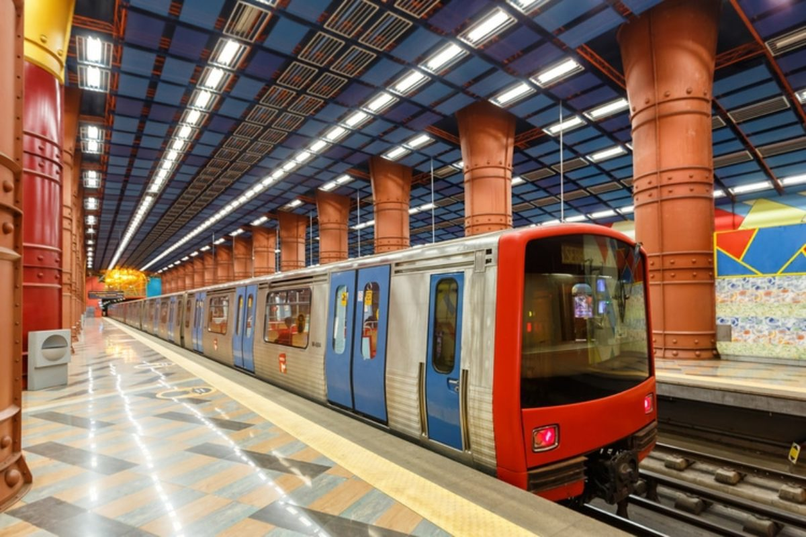

Informações essenciais para planear a sua visita a Lisboa e aproveitar ao máximo a sua estadia na capital portuguesa.
Localização: 7 km do centro da cidade
Transporte para o centro:
Estações principais:
| Transporte | Preço | Observações |
|---|---|---|
| Metro (1 viagem) | 1,50€ | 4 linhas principais |
| Autocarros (1 viagem) | 1,85€ | Rede extensa |
| Elétrico (1 viagem) | 2,85€ | Turístico mas lento |
| Cartão 24h | 6,40€ | Todos os transportes |
Dica: Compre o cartão Navegante para economizar nos transportes públicos!
Primavera (março-maio): Clima ameno, menos turistas
Verão (junho-agosto): Quente, muitos festivais, mais movimento
Outono (setembro-novembro): Temperatura agradável, boa para caminhar
Inverno (dezembro-fevereiro): Mais frio e chuvoso, menos turistas
Preços médios por noite:
Não são obrigatórias, mas 5-10% em restaurantes é apreciado se o serviço foi bom.
| Tipo de Viajante | Orçamento/Dia | Inclui |
|---|---|---|
| Mochileiro | 25-35€ | Hostel, comida barata, transportes |
| Médio | 50-80€ | Hotel 3*, restaurantes, algumas atrações |
| Conforto | 100-150€ | Hotel 4*, bons restaurantes, taxis |
Dica final: Descarregue aplicações como Citymapper para transportes e Zomato para restaurantes!